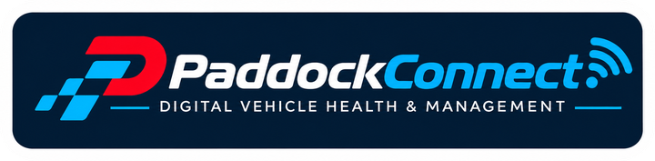
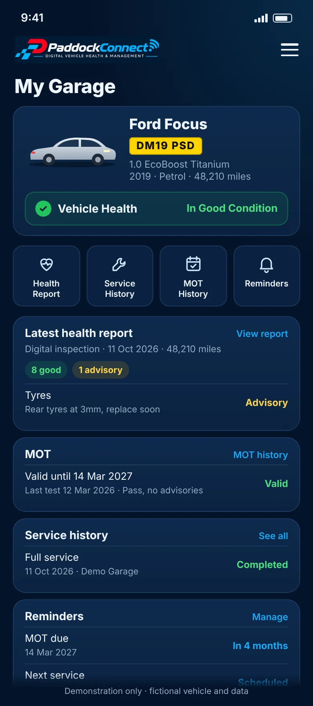

PaddockConnect
PaddockConnect: Digital Vehicle Health & Management

Your vehicle. Your history. Everything connected.
A digital home for drivers to manage vehicle health, service history, MOT reminders, maintenance and garage connections.
In development — a customer portal and future mobile app, not yet publicly available. Screenshots use fictional demonstration data.

What we are building
One place for your vehicle
PaddockConnect is being designed around the information drivers actually need from their garage, in plain language.
-
Vehicle health
A clear view of your vehicle's condition, with digital health reports from inspections.
-
Service and maintenance history
Work carried out on your vehicle, kept together in one record.
-
MOT information
MOT status, expiry and history alongside the rest of your vehicle's record.
-
Reminders
MOT and service reminders, so nothing important is missed.
Connected to your garage
PaddockConnect is the customer-facing companion to PaddockDesk (opens in a new tab), Laurus Group's garage management platform. It is planned to connect with PaddockDesk and, potentially, other garage management systems in future.
These connections, the customer portal and the mobile app are still in development and are not yet live.
Interested in PaddockConnect?
For garages and partners who would like to hear more as it develops: